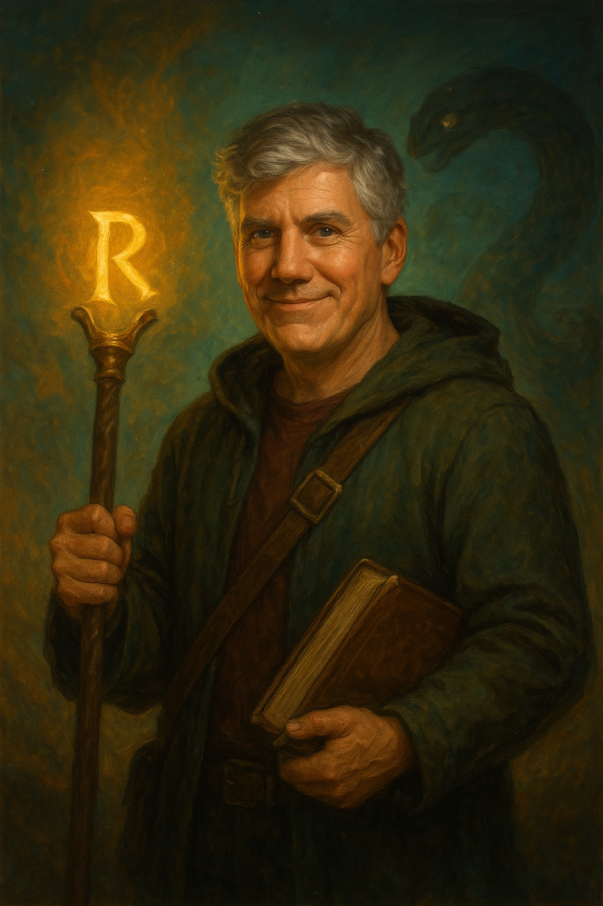

Rick Riordan

Richard Russell Riordan Jr., nascido em 5 de junho de 1964, em San Antonio, Texas (EUA), é um escritor norte-americano conhecido por criar séries juvenis de fantasia baseadas em mitologias diversas. Antes de se dedicar totalmente à escrita, atuou por 15 anos como professor de inglês e história, experiência que influenciou seu estilo voltado ao público jovem. Rick Riordan ganhou notoriedade ao criar a série Percy Jackson e os Olimpianos, inspirada nas histórias de mitologia grega que contava para seu filho Haley, diagnosticado com TDAH e dislexia — características que ele incorporou ao personagem principal, promovendo identificação entre jovens leitores com as mesmas condições.
Reconhecido internacionalmente, Riordan é autor best-seller do The New York Times e já foi premiado por instituições como a YALSA e a American Library Association, além de ter vencido o Children’s Choice Book Awards em 2011. Atualmente, vive em Boston, Massachusetts, com sua esposa Becky Riordan e seus filhos Haley e Patrick.